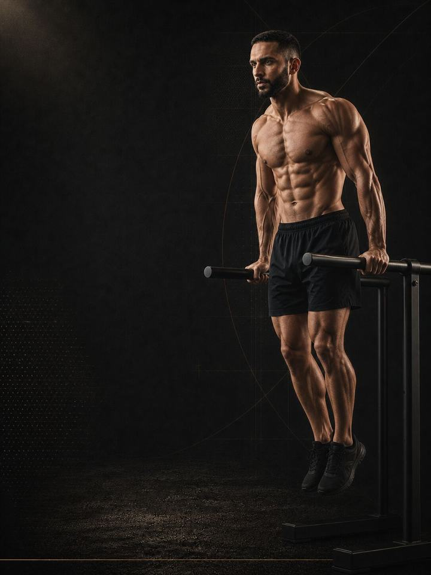

Push / Pull / Legs
Build muscle on six days a week, with every muscle led fresh twice and no session past an hour.
- Built forsix days a week, experienced lifters
- Training days6 gym days a week, one full rest day
- Session length43–57 minutes
- Equipmentfull gym: barbell, dumbbells, cables and machines
- Formatmobile PDF, every exercise linked to a demo video
The store opens soon. For now, Buy opens an Instagram message and you receive the PDF there.
Who it's for
Six days a week is not more effective than four because of anything special about the number six. It works because it buys focus. Each session holds one movement family, so the hardest lift of every day arrives fresh, sessions stay under an hour, and every muscle is still trained twice a week.
The cost is real. Six days means training on days you don't feel like it, and a push, pull, legs rotation with sessions regularly missed delivers less than Upper / Lower run properly on four days. This is the split for people whose schedule and appetite can genuinely hold six short sessions.
It suits experienced lifters who already know what their recovery can absorb.
Not the right fit if you have not yet completed a full block on a four-day split. Run Upper / Lower first.
Your week
Push, pull and legs, twice through, with one full rest day.
| Week | Sun | Mon | Tue | Wed | Thu | Fri | Sat |
|---|---|---|---|---|---|---|---|
| Standard | Day 1 Push | Day 2 Pull | Day 3 Legs | Day 4 Push | Day 5 Pull | Rest | Day 6 Legs |
| Busy (4 days) | Day 1 Push | Day 2 Pull | Rest | Day 3 Legs | Day 4 Push | Rest | Rest |
Three days on, one off, three on also works, and puts the rest day where the week needs it.
The rotation is the unit, not the calendar. On a short week, keep the rotation and stop where the week stops. The next week continues from the day you missed, not from Day 1.
The two rounds are not copies. Each movement family runs twice with a different lead lift: chest then shoulders, vertical pulls then rows, squat then hinge. Whatever leads a session is what that session improves.
Every session runs the same way:
- Warm-up, 8–10 min. Hips, shoulders and ankles before the first heavy set.
- Main compound, 15–20 min. The first two lifts of the day. Full rest, best technique, heaviest loads.
- Secondary work, 10–15 min. The middle of the session at moderate rest.
- Isolation, 10–12 min. Arms, delts, calves and trunk. Short rest, close to failure, last.
The order is deliberate. The hardest compound comes first, while you are fresh, because that is where position and load matter most. Isolation comes last because it is the least technical and the easiest to finish tired.
How the 12 weeks progress
Three phases of four weeks each. Sets per muscle climb into Phase 2. Phase 3 keeps the same sets, while reps drop and effort rises.
| Weeks 1–4 | Weeks 5–8 | Weeks 9–12 | |
|---|---|---|---|
| Phase | Mechanical tension | Volume accumulation | Load intensification |
| Goal | Build technique and connective tissue tolerance at moderate load | Add weekly sets per muscle to drive growth | Raise the load and finish sets closer to failure |
| Working sets a week | 108 | 124 | 124 |
| Average effort | RPE 8.1 | RPE 8.1 | RPE 8.5 |
The block at a glance
Working sets per week, by what they train. The dashed line is effort.
RPE is effort out of 10. RPE 8 means you stop a set with about two good reps left in the tank.
Weekly sets per muscle
| Muscle | Weeks 1–4 | Weeks 5–8 | Weeks 9–12 |
|---|---|---|---|
| Chest | 12 | 14 | 14 |
| Shoulders | 21 | 24 | 24 |
| Arms (direct work) | 12 | 12 | 12 |
| Back | 15 | 19 | 19 |
| Quads | 15 | 17 | 17 |
| Hamstrings | 6 | 8 | 8 |
| Glutes | 12 | 14 | 14 |
| Calves | 6 | 8 | 8 |
Deload weeks: weeks 6 and 12 are lighter. You do half the sets at 1–2 points lower effort, keep the same exercises, and retest fresh.
The rules that make it work
- Add a rep before you add weight. When every set hits the top of the range at the listed effort for two sessions in a row, add 2.5 kg on upper-body lifts, 5 kg on lower-body lifts, or one pin on a machine. Then drop to the bottom of the range and climb again. One change at a time tells you what worked.
- Add a set before you add an exercise. More work on a lift you already know beats a new lift you have never done. Phase 2 is built on exactly that.
- Isolation work goes close to failure. Compounds stop at the listed effort, because technique decides whether they are safe. Curls, raises and calves do not have that problem, so finish those sets.
- A stalled lift is a recovery signal first. Two flat sessions on the same lift usually point to sleep or food, not the program. On six days a week, that happens sooner.
Why sets per muscle sit at the centre
Weekly sets per muscle is the lever that moves size. More sets produce more growth, with diminishing returns, and studies rarely follow anyone past about ten hard sets per muscle a week. Getting close to failure matters for size, but not for strength, where a heavy load with reps left over does the same job. The program uses these findings as its structure and treats exercise choice as detail.
Terms
- Block: 12 weeks. This program. One block develops one set of qualities to a set standard.
- Phase (mesocycle): 4 weeks. Each one targets one quality. Four weeks is a choice, not a rule. The length follows the goal.
- Training week (microcycle): where effort climbs, sets are added and the deload lands.
- Training year (macrocycle): four blocks in order (Base, Build, Compete, Restore), about 48 weeks.
How you'll measure progress
The PDF includes benchmark tests and a score sheet. You record a baseline, then retest fresh in the deload weeks, 6 and 12.
What good progress looks like
- Weeks 1–4: loads feel comfortable on purpose and soreness is highest. This phase prepares you for the next eight weeks.
- Weeks 5–8: sessions get longer, the pump is obvious, and the tape measure moves before the mirror does.
- Weeks 9–12: the sets hold, reps drop, effort rises, and strength catches up with size.
The best result is a waist that held while the arm and thigh went up.
Outside the gym
Training is the signal. Food and sleep decide whether the body can act on it. Muscle is built from a small energy surplus, roughly 1.6–2.2 g of protein per kilogram of body weight a day, and 7–9 hours of sleep. Under-eat or under-sleep and twelve weeks of training turn into twelve weeks of fatigue with little to show for it. This is a training program, not a nutrition plan. For individual targets, see a registered dietitian.
The science
Every program in the library is built on published research, and how strong that research is gets stated, not implied. Where the evidence is limited, the page says so.
| Finding | Source | What it does not show |
|---|---|---|
| Muscle growth increases with weekly sets per muscle, in a graded dose-response. | Schoenfeld, Ogborn & Krieger, Journal of Sports Sciences 2017. Systematic review and meta-regression, 15 studies, 34 treatment groups, trained and untrained participants. PMID 27433992 | About 0.37% more growth per added weekly set. The effect is graded, not unlimited, and studies rarely go beyond 10 or more sets. |
| Every sensible prescription beats not training. Heavier loads rank highest for strength. Multiple sets rank highest for muscle size. | Currier, McLeod, Banfield et al., British Journal of Sports Medicine 2023. Bayesian network meta-analysis, 178 strength and 119 hypertrophy studies, 5,097 and 3,364 participants, about 46% women. PMID 37414459 | The differences between prescriptions were small, and all of them worked. |
| Strength training cuts sports injuries to under a third of the control rate. Stretching does not reduce them. | Lauersen, Bertelsen & Andersen, British Journal of Sports Medicine 2014. Meta-analysis of 25 randomised controlled trials, 26,610 participants, 3,464 injuries. PMID 24100287 | Risk ratio 0.32 for strength training and 0.96 for stretching. The trials varied a lot, and dose was not standardised. |
What's next
After 12 weeks:
- Change the stimulus: Body-Part Split
- Fewer days a week: PPL + Upper/Lower
- One area needs work: the Corrective series
Before you buy: get cleared first if
- You have chest pain, unusual breathlessness, palpitations or dizziness with exertion.
- You have uncontrolled high blood pressure, a known heart condition, or recent surgery.
- You are pregnant or recently post-partum. Get clearance and a tailored program first.
- You have sharp joint pain in one spot that won't settle. Start with the matching AXIS corrective program.
This program is general fitness guidance. It does not replace a medical assessment.
The store opens soon. For now, Buy opens an Instagram message and you receive the PDF there.